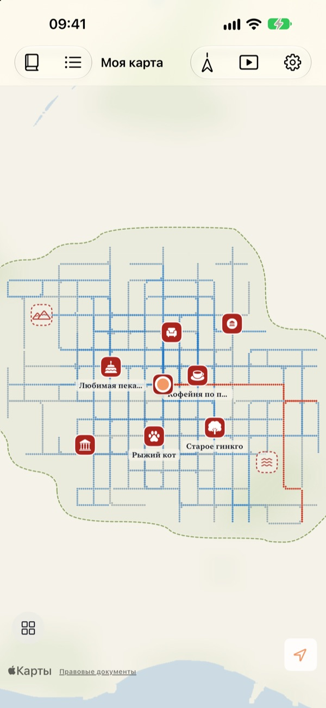
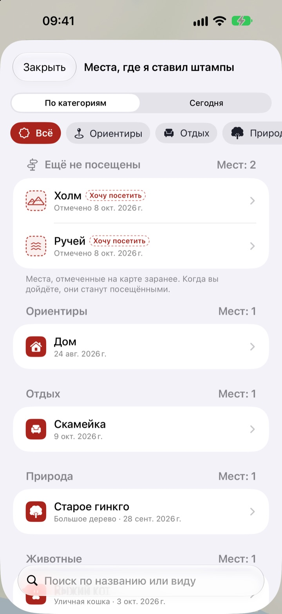
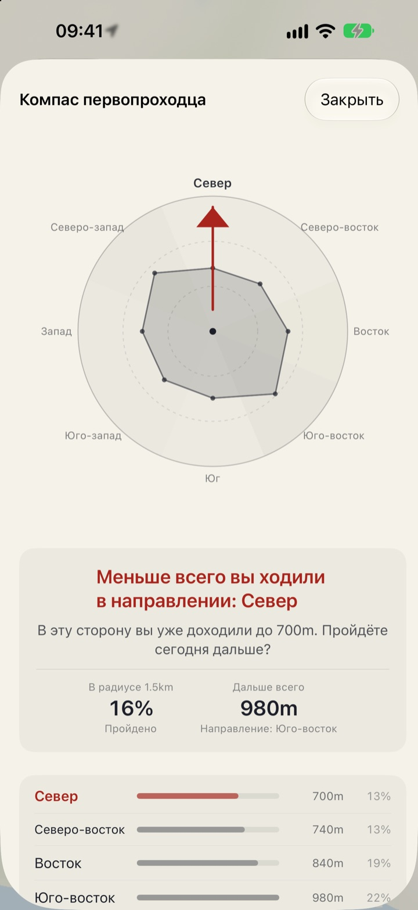
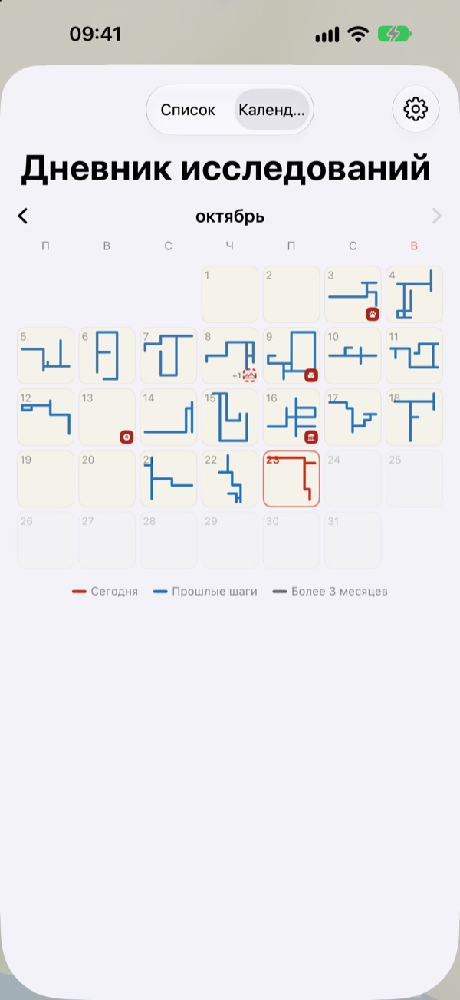

Карта, которая растёт
только от шагов
Сначала это чистый лист бумаги. Точка за точкой заполняются только места, где вы прошли пешком, и сто прогулок по одной улице её не расширят. Чтобы карта росла, выбирайте новый путь.
Все функции бесплатны, рекламы нет.

Пройдитесь
Ведите пальцем или мышью по бумаге, чтобы идти. Синие точки показывают улицы, где вы уже ходили. Посмотрите, как меняется «Путь за сегодня», когда вы идёте по старым следам и когда сворачиваете в новую сторону.
Каждый день по одним и тем же улицам?
Шагомер считает шаги, но не спрашивает, куда они вели. Дорога от дома до станции и обратно легко замыкает кольцо, а соседний переулок годами остаётся загадкой. Buktu Buktu засчитывает только пути, пройденные впервые, и это повод сегодня сделать крюк на один квартал.
Штампы там, где были и куда хочется
Поставьте штамп там, где стоите, или нажмите и удерживайте любую точку карты. На выбор 212 штампов, разложенных по категориям.
Штамп в месте, где вы ещё не ходили, остаётся как «Хочу посетить», а когда вы туда доберётесь, место станет посещённым. Сфотографируйте вывеску магазина, и фон вырежется: она встанет на карте как стикер этого места.

Следующая прогулка: туда, где вы ходили меньше всего
Компас первопроходца делит окрестности на восемь направлений и показывает то, где вы бывали реже всего.
Следы сегодня выстраивают по порядку места, где вы сегодня останавливались, и показывают, сколько вы прошли между ними.

Каждый день оставляет форму
Календарь рисует не число, а форму прогулки за каждый день. Ведите ежедневный дневник с текстом и фото и смотрите, какая часть каждой прогулки пришлась на новые места.
Выберите период и посмотрите, как рисуется ваша карта, в виде видео, которое можно экспортировать.

Три шага для начала
- 1
Откройте приложение
Перед вами развернётся чистый лист.
- 2
Разрешите геопозицию
Выберите «Всегда» и включите «Движение и фитнес», чтобы прогулки записывались без открытия приложения.
- 3
Выходите на улицу
Чем незнакомее улица, тем сильнее растёт карта.
Как читать карту
- Красные точки
- где вы ходили сегодня
- Точки индиго
- прошлые шаги, темнее там, где вы бываете чаще
- Серые точки
- места, куда вы не возвращались больше трёх месяцев. Они выцветают, но не исчезают
- Штамп пунктиром
- место, которое хочется посетить. Становится посещённым, когда вы туда доберётесь
- Пути, которые я нарисовал
- общая длина всех путей, пройденных впервые
- Путь за сегодня
- сколько сегодняшней прогулки пришлось на новые пути
- Смотреть всё вместе
- в настройках открывает Компас первопроходца, Следы сегодня и фильм о том, как рисуется карта
Можно выбрать карту тушью или Карту-рисунок.
Все функции бесплатны
Бесплатно
- Карта, которая заполняется только там, где вы прошли, с учётом новых путей
- 212 штампов и стикеры из вывесок
- Компас первопроходца и Следы сегодня
- Календарь и дневник с текстом и фото
- Экспорт видео о том, как рисуется карта
- Виджеты для экрана «Домой» и экрана блокировки
- Синхронизация между устройствами через iCloud
Поддержать разработчика
- По желанию можно оставить небольшие чаевые в настройках
- Чаевые ничего не открывают. Приложение остаётся тем же
Без рекламы и подписки.
Вопросы
Прогулка была, а на карте ничего нет.
Откройте «Настройки» > Buktu Buktu > «Геопозиция», выберите «Всегда» и включите «Движение и фитнес». Тогда запись идёт, даже когда приложение закрыто. Если в настройках приложения выбран режим записи с экономией заряда, откройте приложение перед выходом. Неточные координаты сохраняются, но на карте не рисуются.
Записываются ли поездки на машине или в метро?
Нет. По данным о движении и скорости приложение рисует только ходьбу и бег, а участки, похожие на поездку на транспорте, отбрасывает. Иногда оно может ошибиться.
Хожу по одному маршруту каждый день, а карта не растёт.
Таково правило. Всё в пределах 30 м от уже пройденного считается той же дорогой, поэтому в «Пути, которые я нарисовал» попадают только новые пути. Тротуар на другой стороне улицы тоже считается той же дорогой. Компас первопроходца покажет, где вы ходили меньше всего.
Отправляется ли куда-то моя геопозиция?
Разработчику нет. Шаги, штампы, дневник и фото хранятся на вашем устройстве и в вашем личном iCloud, разработчик их не видит. Анонимная статистика использования никогда не содержит координат, текста дневника, названий мест и фото. Чтобы превращать координаты в названия мест, используются сервисы Apple Карт. Подробнее в Политике конфиденциальности ниже.
Перенесутся ли записи на новое устройство?
Да. Войдите на новом устройстве в тот же Аккаунт Apple и не выключайте iCloud, и шаги, штампы, дневник и фото перейдут вместе с вами.
Как удалить штамп или фото?
Штампы удаляются из списка «Места, где я ставил штампы», а фото в дневнике удаляется долгим нажатием. Способ стереть все пути и записи дневника разом уже в планах.
Как добавить виджет?
Коснитесь и удерживайте экран «Домой», нажмите «Изменить» > «Добавить виджет» и выберите Buktu Buktu. Для экрана блокировки коснитесь его и удерживайте, затем нажмите «Настроить». Виджет на экране «Домой» показывает форму и длину сегодняшнего пути, а на экране блокировки сегодняшнее расстояние.
Что нужно для работы?
iPhone с iOS 17.0 или новее.
Как с вами связаться?
Отправьте отзыв из настроек приложения или напишите на почту, указанную ниже. Мы ответим как можно скорее.
Вопросы или отзывы? Пишите на leeo@kakao.com.